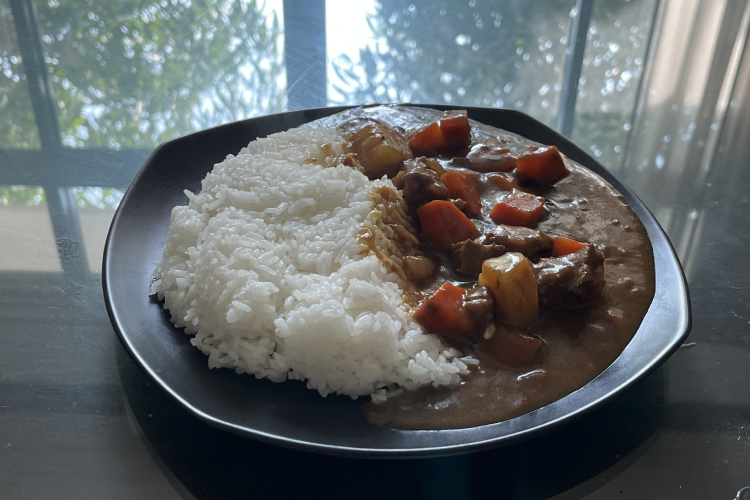

______________________________________________________________________________________________________
______________________________________________________________________________________________________
โดยผงแกงกระหรี่นั้นได้ถูกนำเข้าและเริ่มได้รับความนิยมในช่วงศตวรรษ 19 ในช่วงรัชรสมัยรขององค์
จักรพรรดิเมจิ (ค.ศ. 1869-1912) โดยผงแกงกะหรี่นั้นมาจากอินเดีย ซึ่งในช่วงเวลานั้น ชมพูทวีปยังอยู่
ภายใต้การปกครองของจักรวรรดิอังกฤษ ซึ่งผงกระหรี่และเครื่องเทศอื่นๆ นั้นถูกนำเข้าสู่ประเทศญี่ปุ่น
โดย กองทัพเรืออังกฤษเพราะฉะนั้น ข้าวหน้าแกงกะหรี่ญี่ปุ่น จึงถูกจัดว่าเป็นอาหารตะวันตกในประเทศญี่ปุ่น
______________________________________________________________________________________________________
โดยข้าวหน้าแกงกะหรี่ญี่ปุ่นส่วนมากนั้นจะกินพร้อมกับข้าว, อุด้งหรือขนมปัง ซึ่งมีความหลากหลายและได้รับ
ความนิยมในประเทศญี่ปุ่น เป็นอย่างมาก โดยนอกจากแกงกะหรี่แล้ว ในจานยังประกอบไปด้วยเนื้อสัตว์และผักต่างๆ เช่น
หัวหอม, แครอทและมันผรั่งเป็นส่วนประกอบผักที่สำคัญส่วนเนื้อวัว, เนื้อหมูและเนื้อไก่เป็นตัวเลือกเนื้อที่พบได้มาก
โดยแกงกะหรี่ญี่ปุ่นที่ดีนั้นควรต้องเพิ่ม “วัตถุดิบลับ” พิเศษลงไปด้วย ถือแม้ว่าอาจเป็นส่วนผสมที่ไม่
จำเป็น แต่หากขาดไปรสชาติก็จะเปลี่ยนไปอย่างมาก โดยทางตำราแนะนำส่วนผสมลับที่เป็นตัวหนา
______________________________________________________________________________________________________
เช่นเดียวกับเครื่องปรุงรสอื่นๆ อีกมากมาย ให้นึกว่าเหมือนกับการปรุงอาหารของคุณ แต่สามารถใช่วัตถุดิบอะไรก็ได้
______________________________________________________________________________________________________
เคล็ดลับ: ให้นำไขมันจากเนื้อสัตว์ที่โผล่มาบนนำ้ออกให้มากที่สุด
เคล็ดลับ: หากแกงกระหรี่ของคุณยังเป็นน้ำอยู่ คุณสามารถใช้ก้อนแกงกระหรี่เพิ่มได้ แต่ควรระวังเพราะอาจมีรสชาติที่จัดจนเกินไป
______________________________________________________________________________________________________